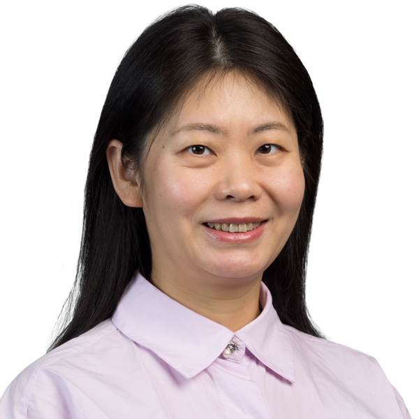

Directory
Data Science
 David BaderDistinguished ProfessorData ScienceHigh Performance ComputingReal-World AnalyticscybersecurityJaini BhavsarUniversity LecturerAritra DasguptaAssociate Professorhuman-AI interactionInformation Visualization
David BaderDistinguished ProfessorData ScienceHigh Performance ComputingReal-World AnalyticscybersecurityJaini BhavsarUniversity LecturerAritra DasguptaAssociate Professorhuman-AI interactionInformation Visualization James GellerProfessorMedical InformaticsSemantic WebOntologiesMedical TerminologiesAkm IslamUniversity LecturerData VisualizationMachine learningData Science
James GellerProfessorMedical InformaticsSemantic WebOntologiesMedical TerminologiesAkm IslamUniversity LecturerData VisualizationMachine learningData Science Ravneet KaurUniversity Lecturer
Ravneet KaurUniversity Lecturer Kaustubh Vijaykumar PethkarUniversity LecturerDaming LiSenior University Lecturer
Kaustubh Vijaykumar PethkarUniversity LecturerDaming LiSenior University Lecturer Yingcong LiAssistant ProfessorPantelis MonogioudisSenior University LecturerArtificial IntelligenceMachine learningAutonomous vehiclesNetworksNikita NemaneUniversity LecturerThanh NguyenAssistant ProfessorMachine learningReinforcement Learningresponsible AI
Yingcong LiAssistant ProfessorPantelis MonogioudisSenior University LecturerArtificial IntelligenceMachine learningAutonomous vehiclesNetworksNikita NemaneUniversity LecturerThanh NguyenAssistant ProfessorMachine learningReinforcement Learningresponsible AI Hai PhanAssociate ProfessorPrivacy and SecurityData MiningMachine learningSocial NetworkAkshay RangamaniAssistant ProfessorMachine learningSignal ProcessingSparsityOptimizationUsman RoshanAssociate ProfessorMachine learningDeep LearningMedical AIBioinformatics
Hai PhanAssociate ProfessorPrivacy and SecurityData MiningMachine learningSocial NetworkAkshay RangamaniAssistant ProfessorMachine learningSignal ProcessingSparsityOptimizationUsman RoshanAssociate ProfessorMachine learningDeep LearningMedical AIBioinformatics
Lijing WangAssistant ProfessorMachine learningDeep Learningnatural language processingLingxiao WangAssistant ProfessorMachine learningHigh-dimensional StatisticsOptimizationDifferential Privacy Chase WuProfessorBig dataMachine learninghigh-performance networkingparallel and distributed computing
Chase WuProfessorBig dataMachine learninghigh-performance networkingparallel and distributed computing Mengjia XuAssistant ProfessorMachine learningGraph Machine LearningLLMsAI + Science
Mengjia XuAssistant ProfessorMachine learningGraph Machine LearningLLMsAI + Science Fatima YusufUniversity Lecturer
Fatima YusufUniversity Lecturer Shuai ZhangAssistant ProfessorLearning TheoryOptimizationFoundation Modelstrustworthy AI
Shuai ZhangAssistant ProfessorLearning TheoryOptimizationFoundation Modelstrustworthy AIProfessors
David BaderDistinguished ProfessorData ScienceHigh Performance ComputingReal-World AnalyticscybersecurityChase WuProfessorBig dataMachine learninghigh-performance networkingparallel and distributed computingAssociate Professors
Aritra DasguptaAssociate Professorhuman-AI interactionInformation VisualizationHai PhanAssociate ProfessorPrivacy and SecurityData MiningMachine learningSocial NetworkUsman RoshanAssociate ProfessorMachine learningDeep LearningMedical AIBioinformaticsAssistant Professors
Yingcong LiAssistant ProfessorThanh NguyenAssistant ProfessorMachine learningReinforcement Learningresponsible AIAkshay RangamaniAssistant ProfessorMachine learningSignal ProcessingSparsityOptimizationLijing WangAssistant ProfessorMachine learningDeep Learningnatural language processingLingxiao WangAssistant ProfessorMachine learningHigh-dimensional StatisticsOptimizationDifferential PrivacyMengjia XuAssistant ProfessorMachine learningGraph Machine LearningLLMsAI + ScienceShuai ZhangAssistant ProfessorLearning TheoryOptimizationFoundation Modelstrustworthy AINo faculty match “”.